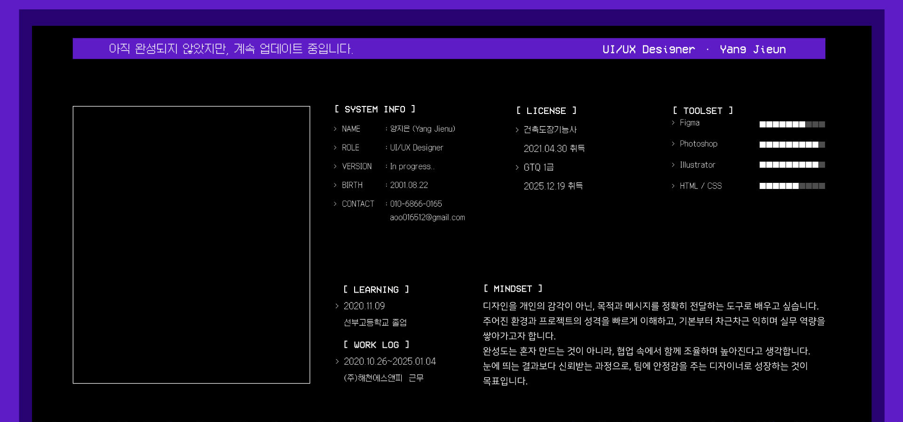
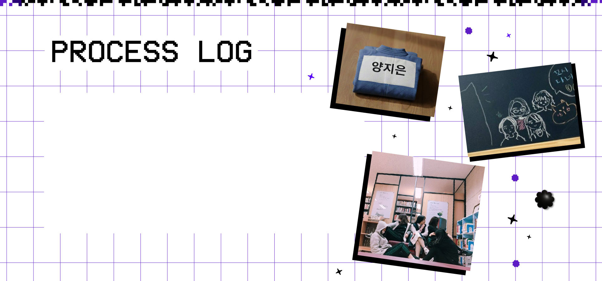
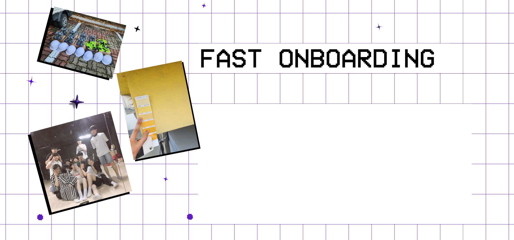
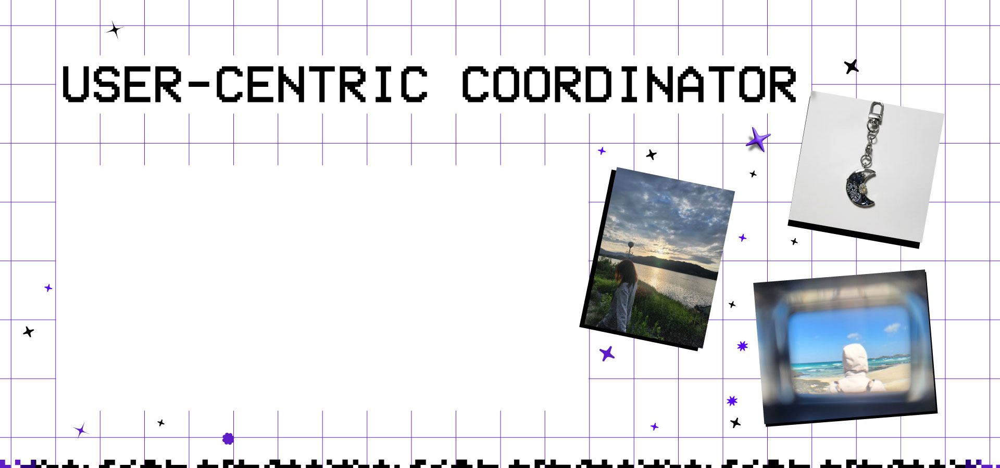
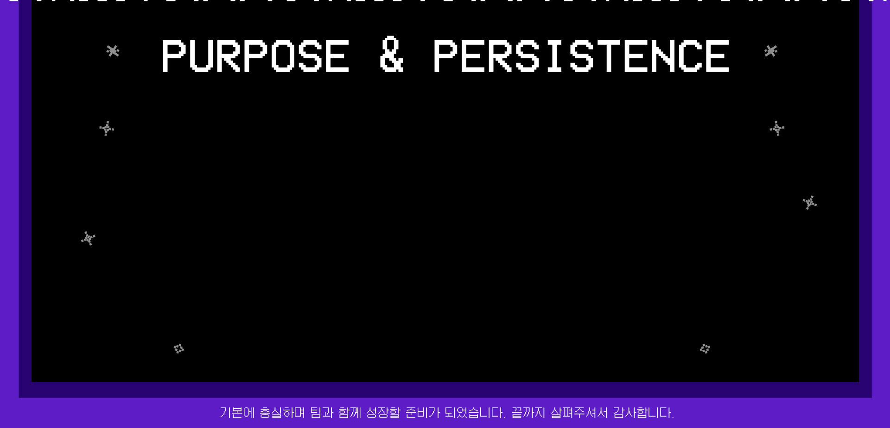

[버티는 힘이 결국 방향을 만들었습니다.]
중학교 시절 유도부 활동을 통해 저는 쉽게 포기하지 않는 태도를 처음으로 체득했습니다. 기술이 바로 익혀지지 않는 상황에서도 반복 훈련을 이어가며, 결과가 나올 때까지 과정을 견디는 법을 배웠습니다. 승부가 분명한 환경 속에서 한 번의 실패로 물러서기보다, 다시 시도하며 끝까지 붙잡는 경험은 이후 제 행동 방식의 기준이 되었습니다.
이후 저는 이 태도를 경쟁이 아닌 다른 방식의 환경에서도 유지하고자 했습니다. 고등학교에서는 도서부에 소속되어 도서 정리와 대출·반납 관리 업무를 맡았습니다. 활동의 성격은 달랐지만, 맡은 일을 중간에 흐트러뜨리지 않고 끝까지 책임지는 자세는 동일했습니다. 반복적이고 눈에 띄지 않는 업무에서도 기준을 세우고 점검하며, 작은 오류가 생기면 그대로 두지 않고 다시 확인하는 습관을 유지했습니다.
이 경험을 통해 저는 포기하지 않는 태도가 반드시 강한 경쟁 상황에서만 발휘되는 것이 아니라, 결과의 완성도를 끝까지 끌어올리는 힘으로 작동할 수 있다는 것을 깨달았습니다. 이후 어떤 일이든 쉽게 내려놓지 않고, 스스로 만족할 수 있는 수준에 도달할 때까지 책임지는 태도는 제 성장 과정의 핵심이 되었습니다.

[현장을 통해 배운 시간과 책임의 감각]
학기 중 전학이라는 큰 환경 변화를 겪으며 새로운 흐름에 빠르게 적응하는 경험을 했습니다. 짧은 시간 안에 학교 분위기와 관계를 파악하고, 약 일주일 만에 새로운 생활 리듬에 자연스럽게 스며들었습니다.
이 경험을 통해 저는 새로운 팀, 방식, 환경에 대한 부담보다 먼저 구조를 이해하고 역할을 찾는 태도를 갖추게 되었고, 이후 변화에 빠르게 적응하는 것이 하나의 루틴이 되었습니다. 이는 프로젝트 단위로 움직이는 에이전시 환경에서도 즉시 온보딩해 역할을 수행할 수 있는 기반이 되었습니다.
고등학교 졸업 후에는 건설 현장에서 4년간 근무하며 실질적인 사회 경험을 쌓았습니다. 다양한 작업자들과 협업하는 환경에서 시간 약속과 팀 조율의 중요성을 체득했고, 일정이 흔들리지 않도록 자재를 선제적으로 준비하고 작업 순서를 조율하는 역할을 맡았습니다. 각자의 작업 방식과 속도가 다른 상황에서도 기본을 지키며 현장의 흐름을 안정시키는 것이 곧 신뢰로 이어진다는 것을 경험했습니다. 이러한 현장 경험은 에이전시 프로젝트에서도 일정과 협업의 흐름을 책임지는 태도로 이어질 수 있다고 생각합니다.

[사용자 경험으로 완성도를 설계하고, 협업의 균형을 만드는 태도]
저의 가장 큰 장점은 결과물을 개인의 취향이 아닌 '사용자 경험'을 기준으로 판단하고, 이를 바탕으로 팀의 흐름을 안정적으로 조율하는 태도입니다. 디자인을 결정할 때 주관적인 감각보다 "대상에게 어떻게 보이고 느껴질까?"를 우선순위에 두는 사고방식은 일상 속 관찰에서 시작되었습니다. 타인의 사진을 찍어줄 때 표현하고 싶은 욕심보다 대상의 장점이 가장 잘 드러나는 구도를 찾았던 경험이나, 레진아트 작업 시 감상자의 시선이 머무를 수 있도록 액자형 구조로 재구성했던 사례처럼 저는 늘 '무엇을 만드는가'보다 '어떻게 경험되는가'에 집중해 왔습니다.
이러한 사용자 중심의 관찰력은 팀 프로젝트에서도 개인의 주장보다 프로젝트의 목적과 사용자 편의를 우선시하는 '균형 잡힌 협업 능력'으로 이어집니다. 예상치 못한 변수가 발생하더라도 문제에 매몰되기보다 해결 가능한 대안을 빠르게 정리하며 팀의 페이스를 유지하는 데 주력합니다. 학원 팀 프로젝트 당시에도 각 팀원의 진행 상태를 세심하게 살펴 역할을 조정하며 팀 전체의 완성도를 높이는 데 기여했습니다.
물론 과정 속에서 공감과 완성도에만 집중해 작업 부담이 쏠리는 시행착오를 겪기도 했지만, 이를 통해 진정한 협업은 한쪽의 희생이 아닌 '서로의 조건과 목표를 명확히 확인하는 과정'임을 깨달았습니다. 현재는 작업 초기 단계부터 체크리스트를 활용해 역할 범위를 설정하고 일정을 관리하며, 완성도와 효율의 균형을 지키기 위해 노력하고 있습니다. 이처럼 사용자를 향한 섬세한 시선과 팀의 흐름을 책임지는 자세를 바탕으로, 매 순간 최선의 결과를 만들기 위해 전력을 다하겠습니다.

[메시지의 본질을 꿰뚫고, 조직의 신뢰를 쌓는 디자이너로 나아갑니다]
진로를 고민하던 과정에서 처음으로 북커버 디자인을 접하며 디자인이 단순한 감각 표현이 아니라, 내용과 의도를 시각적으로 정리해 전달하는 작업이라는 인상을 받았습니다. 이후 약 4년간 건설업 현장에서 근무하며 책임감과 조직 안에서의 역할을 체득했습니다. 현장 업무를 이어가며 장기적인 진로를 고민한 끝에, 디자인은 목적과 메시지를 명확하게 전달하는 도구라는 확신을 갖고 본격적인 학습을 시작했습니다.
광고·디지털 분야에서는 메시지의 즉각적인 전달력에 매력을 느끼고 있으며, 출판·편집 분야에서는 내용과 구조를 정제해 완성도를 높여가는 과정에 흥미를 갖고 있습니다. 매체와 방식은 다르지만, 정보를 정리하고 의도를 정확히 전달한다는 디자인의 본질은 동일하다고 생각합니다.
입사 후에는 특정 분야에 한계를 두기보다 기본기를 탄탄히 다지며 실무 역량을 쌓고, 프로젝트의 성격에 맞는 결과물을 만들어내는 디자이너로 성장하고 싶습니다. 장기적으로는 화려한 개인 성과보다, 팀과 조직 안에서 신뢰를 쌓으며 오래 함께 일할 수 있는 구성원이 되는 것이 목표입니다.
끝까지 읽어주셔서 감사합니다.
메시지의 본질을 놓치지 않는 태도로, 신뢰받는 디자이너로 성장해 나가겠습니다.